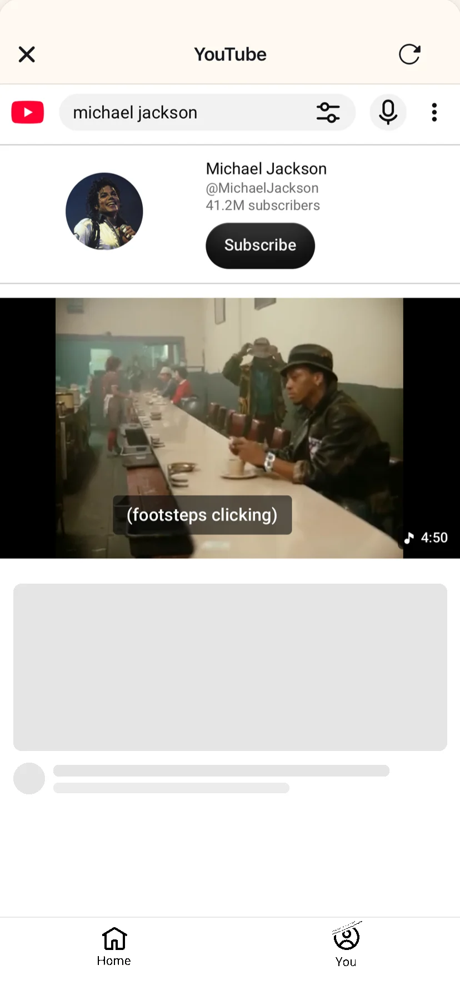

Formas gratis de bloquear los Shorts de YouTube en el iPhone y seguir viendo vídeos normales (2026)
Para bloquear gratis los Shorts de YouTube en el iPhone y seguir viendo vídeos normales, abre YouTube en minulo y activa Ocultar la sección de Shorts y Ocultar la pestaña Shorts: solo desaparecen los Shorts, los vídeos normales, la búsqueda y las suscripciones siguen funcionando, y ocultarlos es gratis, sin suscripción y sin límite de tiempo. Ocultar no tiene periodo de prueba ni pide crear una cuenta, vale para las 10 redes de minulo, TikTok incluido, y bloquear las apps oficiales con Tiempo de uso también es gratis hasta 2 horas cada vez. La forma oficial de YouTube es poner el límite del feed de Shorts en 0 minutos, pero los Shorts siguen en Suscripciones y en los enlaces que te envían, y una cuenta de adulto puede descartar el límite.
En la app de YouTube, pon el límite del feed de Shorts en 0 minutos; no cuesta nada, aunque una cuenta de adulto puede descartarlo. Stillfeed también oculta los Shorts gratis, y Nope lo hace gratis en youtube.com en Safari. El Tiempo de uso del iPhone también es gratis, pero bloquea toda la app de YouTube.
- Instala minulo, toca Añadir un servicio en el inicio y elige YouTube.
- Toca el engranaje junto a YouTube y activa Ocultar la sección de Shorts, Ocultar la pestaña Shorts y Abrir los enlaces de Shorts en el reproductor normal. Ocultar los Shorts es gratis.
- Los vídeos normales, la búsqueda y las suscripciones funcionan en minulo como siempre.
- Opcional: en la pestaña Bloquear, bloquea la app oficial de YouTube con Tiempo de uso, gratis hasta 2 horas por bloqueo. Al tocar su icono aparece una pantalla de bloqueo, y Abrir en minulo te lleva a YouTube sin Shorts.
Esta página la escribe Ayumu Kitabayashi, el desarrollador de minulo. Lo relativo a YouTube procede de la ayuda de YouTube, y lo relativo a otras apps, de sus fichas en la App Store de EE. UU., comprobadas en octubre de 2026 (FeedOff y StillTabs, el 2026-11-10). Los nombres de los menús pueden cambiar con las actualizaciones de las apps.
| Opción | Shorts | Vídeos normales | Precio y límites |
|---|---|---|---|
| Límite del feed de Shorts en 0 (app de YouTube) | Aparece una pantalla de límite en el feed de Shorts | Se quedan | Gratis. Los adultos pueden descartarlo. YouTube solo da los pasos para la app |
| Mostrar menos Shorts (app de YouTube) | Menos en Inicio | Se quedan | Gratis. Es una opinión, no un interruptor |
| minulo | Ocultos: la sección de Shorts y la pestaña Shorts; los enlaces de Shorts se abren en el reproductor normal | Se quedan, con las suscripciones, Ver más tarde y la búsqueda | Ocultar es gratis |
| Stillfeed | Se quitan en su navegador integrado | Se quedan | Gratis. 8 redes, entre ellas Instagram y YouTube |
| Reelmute | Ocultos | Se quedan | Ocultar es gratis |
| Nope | Ocultos en youtube.com | Se quedan | Totalmente gratis. Solo Safari |
| FeedOff | Ocultos en su propio navegador | Se quedan | Sin suscripción ni compras dentro de la app. 6 redes, sin TikTok |
| StillTabs | Se quitan en su propio navegador | Se quedan | Totalmente gratis: sin compras dentro de la app. 5 redes, sin TikTok |
| Tiempo de uso del iPhone | Bloqueados junto con toda la app | También bloqueados | Gratis |
Pon el límite del feed de Shorts en 0
En la app de YouTube, ve a Tú › Configuración › Gestión del tiempo › Límite del feed de Shorts y elige 0 minutos. Es el paso gratis más rápido, pero es un recordatorio, no un bloqueo: una cuenta de adulto puede descartar el límite y seguir viendo. La ayuda de YouTube solo da los pasos para la app de YouTube. En Inicio también puedes tocar Más (⋮) en una cuadrícula de Shorts y elegir Mostrar menos Shorts.
Ocultar los Shorts con minulo y quedarte con los vídeos normales
- Instala minulo, toca Añadir un servicio en el inicio y elige YouTube.
- Toca el engranaje junto a YouTube y activa Ocultar la sección de Shorts, Ocultar la pestaña Shorts y Abrir los enlaces de Shorts en el reproductor normal. Ahí también está Recomendaciones de Inicio, si solo quieres las suscripciones.
- Las suscripciones, Ver más tarde y la búsqueda se abren directamente desde el inicio de minulo.
- Opcional: en la pestaña Bloquear, bloquea la app oficial de YouTube con Tiempo de uso, gratis hasta 2 horas por bloqueo. Su botón Abrir en minulo te lleva a YouTube sin Shorts.

Ocultar es un ajuste, así que se queda activado hasta que lo cambies. minulo Pro añade el Modo sueño, el modo Horario de trabajo, bloqueos más largos, el Modo estricto y un Límite diario. minulo no tiene versión para iPad.
Para que decidas con toda la información, estos son sus límites: minulo no puede cambiar las apps oficiales, así que los Reels y los Shorts solo se ocultan dentro de minulo. Mientras minulo bloquea una app oficial, las notificaciones de esa app no llegan, y minulo no envía notificaciones propias. No se pueden publicar historias, enviar mensajes de voz ni hacer llamadas, porque las versiones web de estas redes no lo permiten. minulo funciona en iPhone y Mac (la app para Mac funciona en Safari y Chrome), no en Android, y es nueva, con pocas valoraciones. Consulta lo que minulo no puede hacer.
¿Hay alguna app gratis para bloquear los Shorts de YouTube en el iPhone?
Sí: minulo, Stillfeed y Reelmute ocultan los Shorts gratis en su propia app y solo cobran por los extras. Nope es totalmente gratis, pero solo funciona en youtube.com en Safari. FeedOff y StillTabs no tienen compras dentro de la app y quitan los Shorts en su propio navegador. ShortformBlock es otra extensión gratis de Safari que oculta los Shorts en youtube.com; lo comparamos en minulo o ShortformBlock.
¿Puedo quitar los Shorts y seguir viendo los vídeos normales de YouTube?
En la propia app de YouTube, no. Abre YouTube en minulo con la sección de Shorts y la pestaña Shorts ocultas; los vídeos normales, las suscripciones, Ver más tarde y la búsqueda siguen funcionando.
¿Poner el límite de Shorts en 0 bloquea los Shorts?
Muestra una pantalla de límite al llegar a los 0 minutos, pero una cuenta de adulto puede descartarla y seguir viendo. La ayuda de YouTube lo describe para la app de YouTube.
¿Alguna app puede quitar los Shorts de la app oficial de YouTube?
No. En el iPhone ninguna app puede cambiar lo que muestra otra. minulo puede bloquear la app oficial de YouTube con Tiempo de uso y llevarte a su vista sin Shorts. Mientras está bloqueada, las notificaciones de YouTube no llegan.
¿El Tiempo de uso es una buena opción gratis?
Es la opción gratis más estricta si el código lo pone otra persona, pero bloquea toda la app de YouTube, incluidos los vídeos que sí querías ver.
Fuentes